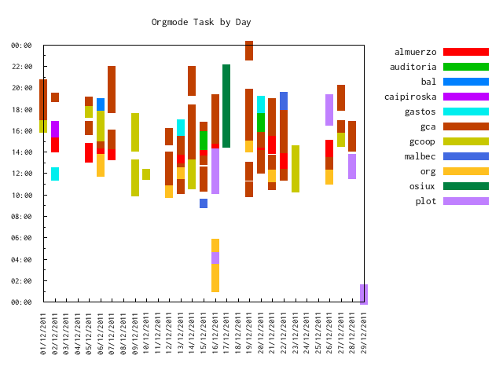

orgmode y gnuplot una buena combinación
ABSOLUTELLY NO WARRANTY | CC-BY-SA | OSiUX | blog | docs
Hoy me desvelé pero estoy muy contento, luego de varios días de jugar con gnuplot y orgmode logré realizar el gráfico que hace tiempo tenía ganas de hacer y por si fuera poco, documenté todo el proceso. :-)

Lee la nota completa en: